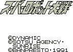
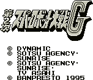

Super Robot Wars - Gameboy Games

- Company: Banpresto
- Genre: War strategy simulation
From Susano Orbatos:
You get to choose from three teams of famous mechas. Team one is the Gundam team. Team two is
the Mazinger Z team including Mazinger, Great Mazinger, Aphrodite-A, and
Diana-A. Team three contains Shin Getter Robo, and the Shin Getter 2,
some female robot, and Texas Jack.

Anime Video Game Resource Center © 1998 by Luis A. Cruz